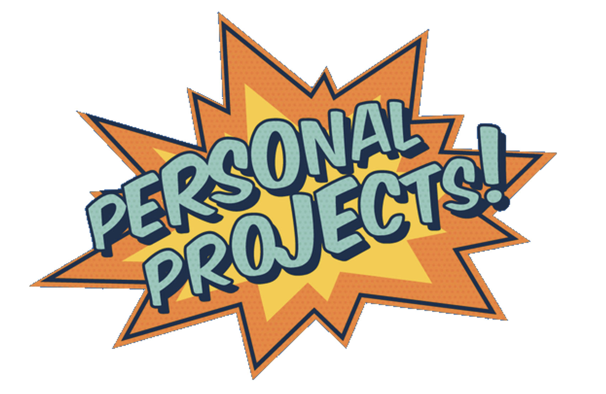
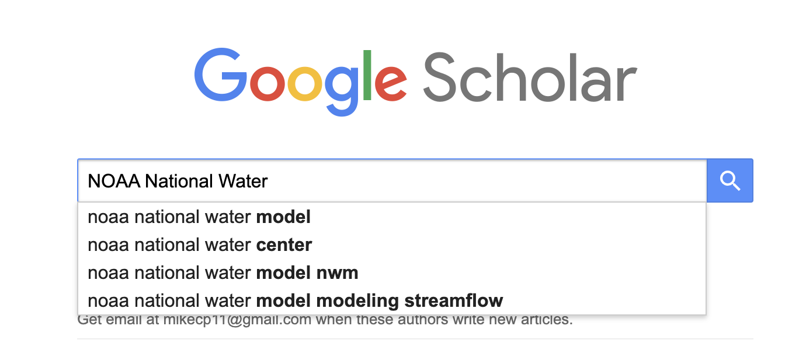
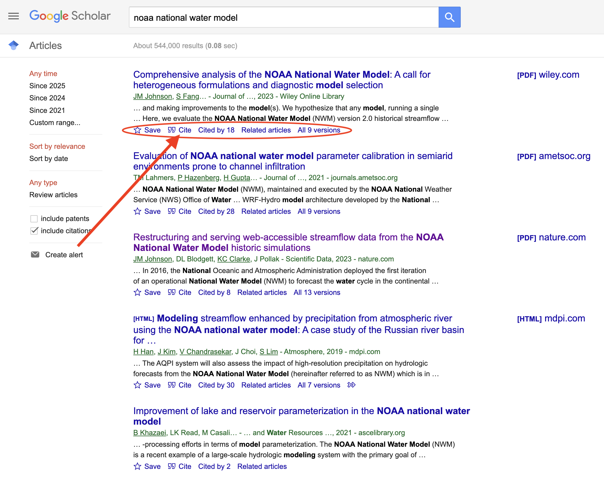
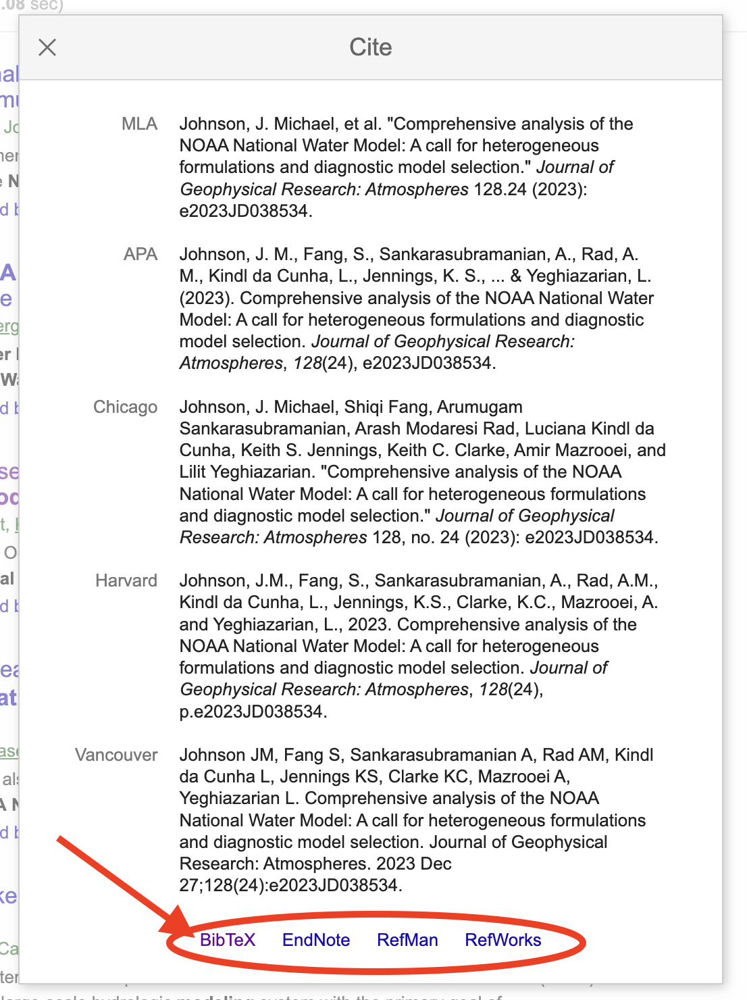
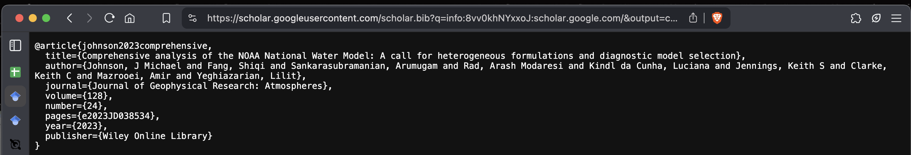

Lab 5: Final Project Proposals
Quarto Manscripts & Ideation
In this lab you will learn to use Quarto Manuscripts and begin thinking about your final project in teams of 2-3.
Team Formation
With your TA’s work to form teams of 2-3 students. While it may be tempting to work with Friends please consider interests (hydrology vs demography) and strengths (writing vs coding). Once teams are decided, please proceed with the lab instructions below as a team.
Project Setup
Setting up a quarto manuscript is very similar to how you set up your initial website. Please work through the following steps to get started. For now, you can do this from one teammates computer:
1. Create a new RStudio project
2. Add a .git archive (usethis::use_git())
3. Sync it to Github (usethis::use_github())
4. In your RStudio termnial complete the following:
Type:
quarto create projectUse the arrow keys to move down and select
ManuscriptEnter directory as
.(shorthand for “here”)Enter the Title for the project (e.g. “ESS 330 Project Proposals”)
Hit Enter to create the project!
5. In your File Explorer, you will know see some new files:
_quarto.yml: This is the configuration file for your project. You can use this to set up your project with specific settings, like the format of the output (e.g. html, pdf, etc.)index.qmd: Like before, this is your primary file for adding content.
Add your team members to the project!
In the yml, you’ll see specific structure for the manuscript. Be sure to replicate the author entries for all group members! For now, choose one person to the corresponding author (e.g. corresponding: true). This will be the person responsible for submitting your lab for the team.
references.bib: This is where you can store your references for your project. If you open it now, you will see that it currently has 1 bib entry. You’ll also note that
6. Push this content as your initial commit and have you TA ensure things are linked!
Adding references!
Through out this process you will need to cite references that justify why your project is significant, why you make assumptions that you do, and why you are using the methods you are. The quickest way to find references that you can cite is to use Google Scholar.
Example:
Navigate to Google Scholar and enter an search term of interest (e.g. “NOAA National Water Model”)

Searching for that term, will take you to a list of papers (you can search by author, title, etc too). Underneath each paper, you’ll see a Cite button. Click that to pull up the citation information for that paper.

If you use a reference manager, you can select the Refman option, but for this lab lets stick with the BibTeX option.

Clicking BibTeX will open a new window with the citation information in BibTeX format. Notice that this looks identical to the fake references in your references.bib file.

Copy this information and paste it into your references.bib file ensuring there is a empty line between each bib entry.
Adding references to your article
In that example, you’ll see the article key - johnson2023comprehensive. You are free to use the autogenerated one, or, edit it. Regardless, this is your citation key for this reference.
Navigate back to you index.qmd file and add the code @CITEKEY (Where CITEKEY is the key you assigned to the reference in your references.bib filee.g. @johnson2023comprehensive) to the text where you want the citation to appear.
For more explict help on how to create in-line vs parenthetical citations see the examples in the Quarto Documentation here.
Awesome! You are now on your way to sourceing and adding citations to your proposal.
Formating your citations
Have you ever had to format a paper and struggled with the references? It’s the worst thing in the world - especially if you need to make a change (e.g. APA to Nature). A significant advantage of using Quarto/CSL is that it can handle all formating and styling for you thanks to its integration with Pandoc and Citation Style Language (CSL).
By default, Pandoc will use the Chicago Manual of Style author-date format, but you can specify a custom formatting using any CSL (Citation Style Language) file.
To provide a specific (or custom!) citation stylesheet you must provide a path to a CSL file using the csl metadata field in your yml, for example:
---
title: "My Document"
bibliography: references.bib
csl: nature.csl
---Now, CSL files are a bit like CSS files for citations, but, they do not come with Quarto. Instead, you must link them (via a path to downloaded style sheet). You can browse the list of more than 8,500 Creative Commons CSL definitions in Zotero’s style repository. You can also learn more about using styles at the CSL Project.
Enable APA citations
Navigate to the Zotero style repository and search for/download the American Psychological Association 7th edition csl file. Save it in the same directory as your index.qmdf ile. Then, add the csl tag to your yml!
ESS 330 Final Project Proposals
With your structured project in place, it is know time to start thinking about your final project. Each team member is responsible for proposing two ideas for the final project. Each idea should be unique and independent of the others. Your TA will provide feedback on the scope and feasibility of each one, and based on their comments and your personal preference you will choose one of your proposed projects to pursue for your final project. All proposals will be submitted in the same Quarto manuscript using headings to separate each proposal. Each proposal must include:
Title: Give a short, informative title describing the project.
Justification: Write a short paragraph (~150 words) explaining the significance of the project with supporting background information. You must include at least two references (with proper APA citation format) that back up your reasoning for significance. (10 points)
Research objective/question/hypothesis: Include the specific objective that you aim to achieve in this study and a testable hypothesis, model or analysis you want to carry out. (5 points)
Proposed Methods: Briefly (short paragraph) describe how you plan to carry out your study. Specify the datasets and variables available and needed (try to provide links/citations for your datasets, or a notion of where you will get your data). Each project should integrate at least two data sources! Additionally, describe the scope of your study (e.g., spatial and temporal scale) and the statistical tests you will use to test your hypothesis. (10 points)
Expected Outcomes: Based on your research question, describe what you expect to find in the results and the reason such an outcome is important. (5 points)
Rubric:
- All work contained in a deployed Quarto manuscript (10 points)
- All authors included in the yml with a corresponding author listed (5 points)
- 2 ideas per person in the group (60 points) (30 points each idea, scaled/averaged to number of members)
- All citations captured in the document, and linked to the references.bib file (15 points)
- APA citation style added and applied (10 points)
Sumbit your Github URL to your proposal via Canvas. In the text associated with the submission, please include the names of all group members.
Total: 100 points